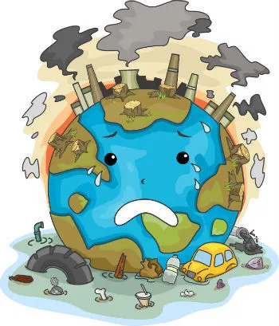

🌍 Poluição Ambiental
A poluição ambiental é a degradação do meio ambiente causada pela introdução de substâncias ou agentes poluentes no ar, na água, no solo e até no som. Ela é, em grande parte, resultado das atividades humanas e representa um dos maiores desafios ambientais da atualidade.
🧪Tipos de Poluição e seus Efeitos
| Tipo de Poluição | Causa Principal | Consequência |
|---|---|---|
| Poluição do Ar | Queima de combustíveis fósseis | Doenças respiratórias, aquecimento global |
| Poluição da Água | Descarte de esgoto e lixo nos rios | Morte de peixes, contaminação da água |
| Poluição do Solo | Acúmulo de lixo e agrotóxicos | Destruição da vegetação, contaminação do lençol freático |
| Poluição Sonora | Trânsito, obras e indústrias | Estresse, perda de audição |
Para combater a poluição, é importante promover a educação ambiental, reciclar e buscar alternativas sustentáveis.
Diante dos sérios impactos da poluição ambiental, é fundamental que a sociedade adote práticas sustentáveis e conscientes. A preservação do meio ambiente depende de ações individuais e coletivas, como a redução do consumo, o descarte correto do lixo e o uso de fontes de energia limpa. Além disso, a educação ambiental desempenha um papel essencial na formação de uma cultura voltada para a proteção do planeta. Somente com responsabilidade e compromisso será possível garantir um futuro saudável para as próximas gerações.